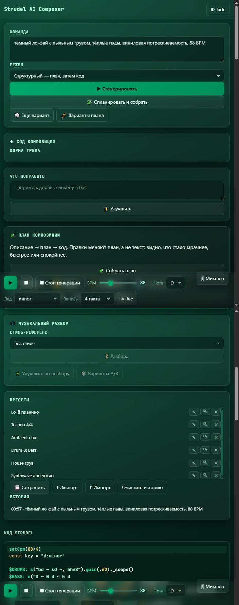
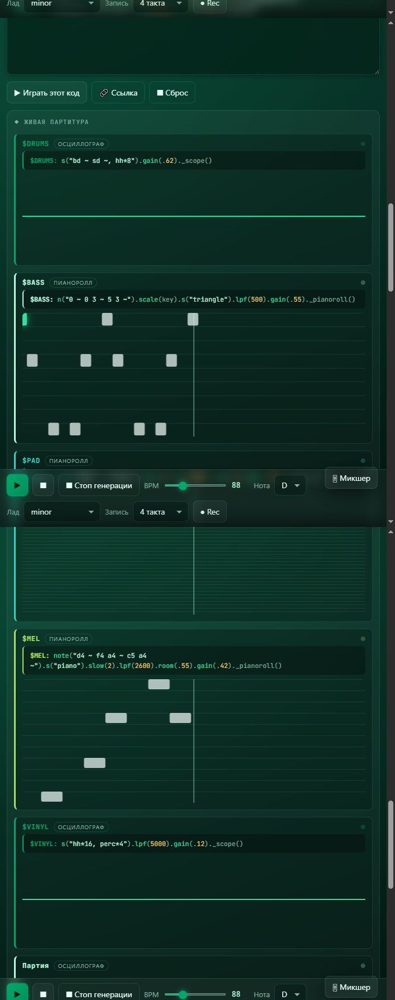
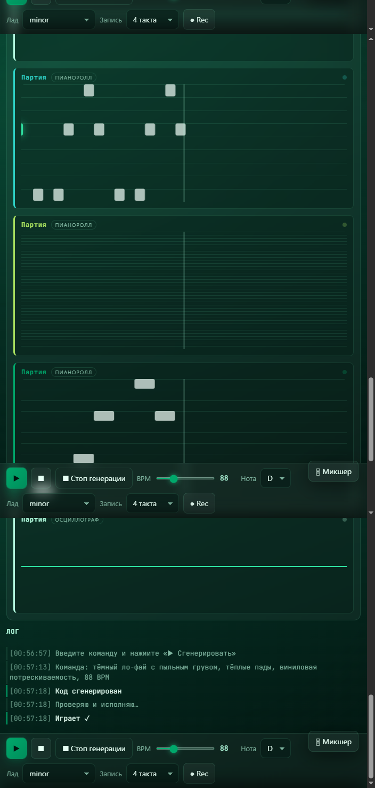
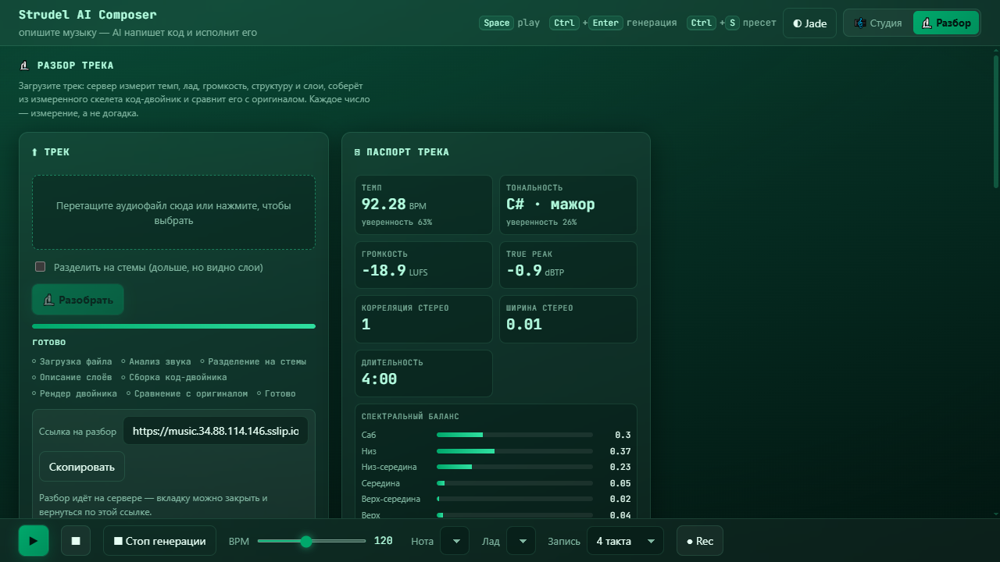
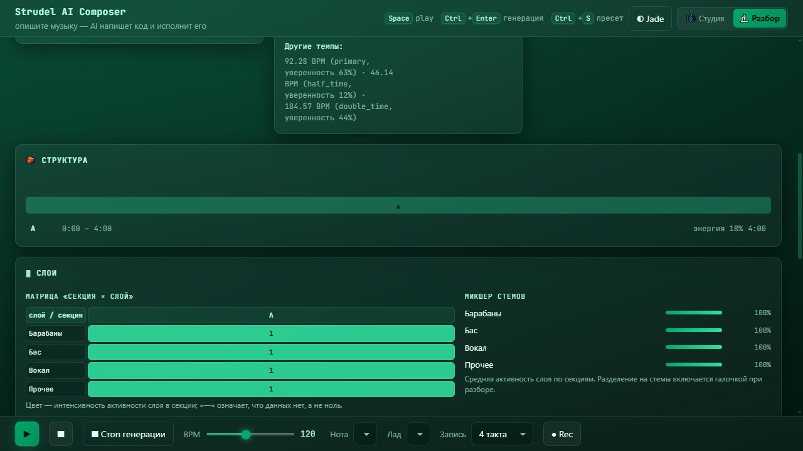
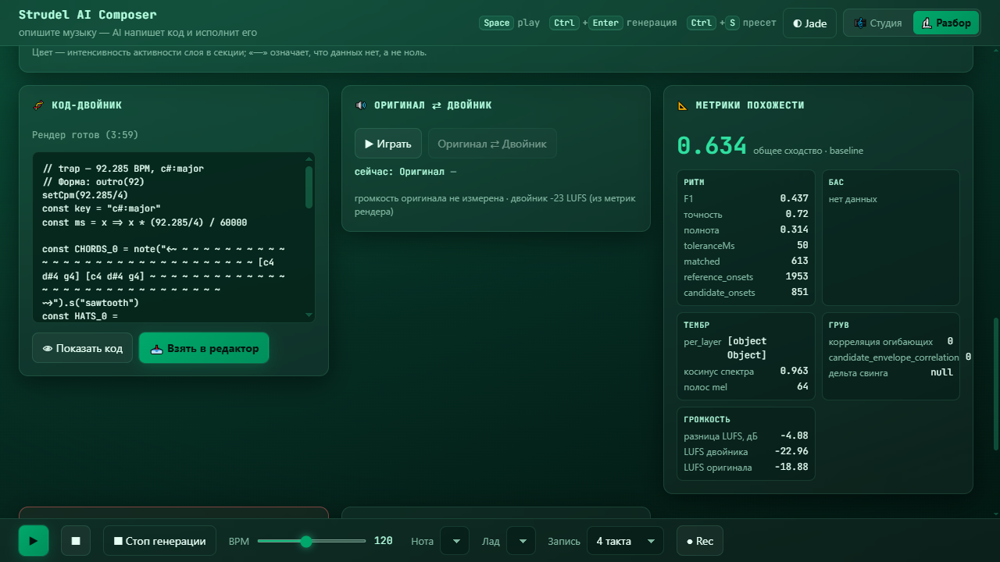
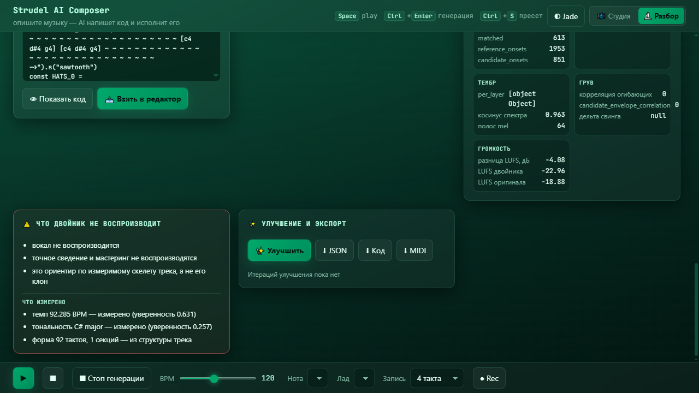

Браузерная студия, где LLM решает что играть, детерминированный код решает как, а измерения решают получилось ли. Плюс режим «Разбор»: чужой трек → измерения → стемы → редактируемый код-двойник с честным отчётом о сходстве.
Всё ниже — не пересказ документации. Код, тесты, API и скриншоты проверены на этом коммите (7e52c22) и на боевом стенде music.34.88.114.146.sslip.io.
01 — суть проекта
Главная инженерная идея проекта: качество проверяется по трём слоям, от дешёвого к дорогому. Слой L1 отсекает мусор за миллисекунды, L0 даёт техника по аудио, L2 — только то, что стоит человеческого времени.
Источник истины — события движка Strudel (queryArc), а не свой парсер mini-нотации. Считается форма, энергия, мотив, замыкание фразы, лок бас–кик.
Стоимость: миллисекунды
Клиппинг, true peak, LUFS-I, повторяемость рендера, null-тест суммы стемов. Свой DSP по BS.1770-4, сверен с ffmpeg ebur128 (|ΔLUFS| ≤ 0.05).
Стоимость: секунды
Слепой A/B с выравниванием громкости, порог по нижней границе Wilson, canaries против взлома метрик. Сейчас: 0 живых пар — слой честно не включён.
Стоимость: минуты человека
02 — архитектура
«Студия» и «Разбор» не делят ни состояния, ни кода исполнения — разбор не ломает композицию, а композиция не знает про стемы. Общее у них только DSP и компилятор.
Сервер: SSE, rate-limit, helmet, graceful shutdown.
Воркер анализа: librosa, Demucs, own DSP-ядро.
Фронт: Web Audio, AudioWorklet-цепочка, 713 КБ движка.
Сервер, воркер, рендер-контейнер, Caddy на 2 vCPU.
03 — живая демонстрация · контур «Студия»
Команда «тёмный ло-фай с пыльным грувом, тёплые пэды, виниловая потрескиваемость, 88 BPM» в структурном режиме. Ниже — реальный экран живого стенда: слева панели, в центре редактор с живой партитурой, справа лог.


setCpm(88), const key = "c#:minor", $BASS: "<c# 0 3 5>*8" — бас транспонирован на -12 строго после .scale(key).
команда → «Код сгенерирован» → звук пошёл
оценка готовности трека
партий собрано компилятором
ошибок в консоли страницы
arrange() по секциям. Невалидный код невозможен по построению..scale(key) — строго -12, иначе Strudel молча игнорирует значение.<0 5 2 6>/2 свой парсер даёт 1 событие, Strudel — 4.04 — живая демонстрация · контур «Разбор»
Это главное отличие проекта от обычного «LLM пишет код». Проверено на боевом стенде на задаче d5bef1ce — 4-минутный трек, полный цикл с разделением на стемы.
Полный цикл — 3386.9 с (56.4 мин), errors: []. Оценка времени показывается ДО работы: «2–3 мин» для трека без стемов, диапазон по худшему замеру Demucs для трека со стемами.


— означает «данных нет», а не ноль. Справа — микшер четырёх разделов.
s("808oh"), beat(), микро-сдвиги late(ms(...))), A/B-плеер «оригинал ⇄ двойник» и четыре слоя метрик.
Ритм: precision 0.72, recall 0.31 (613 совпадений из 1953 атак). Громкость двойника на 4.08 дБ тише оригинала.
05 — как считается оценка
Общая оценка — взвешенное среднее по слоям, у которых есть данные. Слой без измерений исключается, а не штрафуется (правило D-080).
06 — чего не хватает
Ниже — не пожелания, а то, что проверено на коде и на стенде. Приоритет: P0 блокеры релиза P1 функциональные P2 качество и UX
| Приор. | Разрыв | Доказательство |
|---|---|---|
| P0 | Лицензии сэмплов не сверены. 42 сэмпла из 44 тянутся с внешнего CDN, тексты лицензий не собраны и не закоммичены. | docs/LICENSES.md, HANDOFF §Блокеры |
| P0 | Выученная цель не допущена. Модель обучена на 60 прокси-парах, живых человеческих — 0. Уникальных промтов закрыто 5 из 50 нужных. Модель не используется в скоре — и это правильное поведение. | /api/taste → nHuman:0; /api/preference/stats → uniquePrompts:5 |
| P0 | Публичная ссылка на разбор без авторизации. Любой, у кого есть URL, видит весь отчёт. TTL 7 дней. | проверено на стенде: /razbor/<id> открыт без входа (признано в D-084) |
| P1 | Бас-слой не измеряется. Стем баса доступен на 100% длины, но метрика баса — «нет данных». Второй по весу слой (0.30) выпадает из каждого разбора. | прод, задача d5bef1ce: stems.bass.available=true, layers.bass отсутствует |
| P1 | Оценка нестабильна между прогонами. Знаменатель зависит от того, какие слои смогли измерить, поэтому баллы разных треков несопоставимы. | compare.js:213-215 — веса нормируются по фактически посчитанным слоям |
| P1 | Грув даёт половину балла за отсутствие сходства. Нулевая корреляция огибающих нормализуется в 0.5, при этом swing_delta = null. За то, что грув не воспроизведён, платится 0.5 × 0.10. |
compare.js:198 — normalized = (corr+1)/2 |
| P1 | Учёт стоимости LLM не подключён. Функция recordUsage определена и не вызывается нигде в репозитории. Обвязка onUsage при этом есть от completeChat до маршрутов. |
прод /api/stats → requests:0, costUsd:0 |
| P1 | UI-дефект в панели метрик. Объект слоя тембра выводится строкой [object Object] вместо разбора по слоям. |
скриншот блока «МЕТРИКИ ПОХОЖЕСТИ», прод, «ТЕМБР → per layer» |
| P1 | Разбор студии теряет звук. Аудио-рендер для анализа падает с InvalidAccessError (узлы разных AudioContext), и панель остаётся без метрик громкости и пика. |
прод, живой прогон: «Рендер для разбора не удался», 8 ошибок в консоли |
| P2 | Нет ограничения длины двойника. 92 такта → 3:59 рендера, полный разбор 56 минут. Оценка «14–27 мин» покрывает только разделение, рендер считается отдельно — пользователь получает двойной сюрприз. | замер в UI: «Рендер готов (3:59)» на 92 тактах |
| P2 | Первый экран пустой. Нет демо-разбора «посмотри, как это работает, без регистрации» — студия начинается с пустого поля ввода и пустых панелей. | docs/AUDIT.md §2, чек-лист «демо без регистрации» |
| P2 | Аудио-фикстур в репозитории нет. Регрессии DSP ловятся только синтетикой; настоящий сигнал не проверяется. | поиск *.wav/*.mp3 вне node_modules → пусто |
| P2 | Бандл 713 КБ одним чанком. Код-сплиттинга нет, несмотря на наличие бюджетного гейта. | dist/assets/strudel-engine-*.js = 712.9 КБ |
| P2 | CSP ослаблен. В script-src одновременно unsafe-eval и unsafe-inline — при живом исполнении пользовательского кода это заметно расширяет поверхность атаки. |
server/index.js:52-59 |
sslip.io временный, веса Demucs под вопросом лицензии, GPU сознательно отменён владельцем (D-089) — всё это записано в docs/PARKING.md с причиной и условием открытия. Проект различает «не сделано» и «осознанно отложено», и второе — не дефект.
07 — оценка
Это редкий проект, где инженерная культура обгоняет продукт. Решения принимаются по замерам, а не по ощущениям; каждое архитектурное решение записано с причиной; отрицательные результаты считаются поставкой. Такое встречается редко.
Но продуктовая сторона отстаёт: первый экран пустой, главный рычаг (человеческие метки) обесточен, а главная функция — разбор — на 4-минутном треке упирается в 56 минут и 2 vCPU. Между «инженерно отличным» и «пользовательским продуктом» остаётся вся дистанция.
ffmpeg/libebur128, рендер повторяем бит-в-бит, в отчётах renderFingerprint.08 — что делать дальше
Открыть /tinder.html и оставить 20 суждений — около 6 минут. Это единственный путь, который разблокирует выученную цель: сейчас 0 живых пар, нужно 50 разных промтов. Пока модель не проверена людьми, её нельзя ставить целью оптимизации — и проект сам это не даёт сделать.
Усилие: 6 минут в день
Два слоя из четырёх дают ноль или «нет данных» на реальном треке, а аудио-рендер разбора падает на живом контексте. Это самый дешёвый способ поднять качество: измерить питч баса из разделенного стема, научиться считать грув так, чтобы нулевая корреляция давала 0, и гасить живое воспроизведение перед офлайн-рендером.
Усилие: 1–2 дня
Одна строка в server/llm/router.js — и /api/stats перестаёт показывать нули. После этого можно честно назвать цену трека, «найди лучший» и ночного прогона, а не считать её на глаз.
Усилие: час